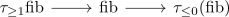

complete t-structure and conservative homotopy object functor
Proposition
Let $\mathcal{C}$ be a stable infinity category equipped with a complete t-structure and $f: x \rightarrow y$ a morphism . TFAE:
- $f$ is an equivalence
- $\pi_*(f): \pi_*(x) \rightarrow \pi_*(y)$ is an equivalence
Proof
1) $\implies$ 2)
clear
2) $\implies$ 1)
let $\mathrm{fib}$ be the fiber Then it suffices to show $\mathrm{fib} \simeq 0$ (cf. equivalence and trivial fiber/cofiber sequence in a stable category). The long exact sequence in the heart for a t-structure shows $\pi_*(\mathrm{fib}) = 0$, so in particular also $\pi_*(\tau_{\leq 0} \mathrm{fib}) = \pi_*(\tau_{\geq 1} \mathrm{fib})$. Now consider the fiber sequence

and observe that $\tau_{\geq 1} \mathrm{fib}$ is bounded above and $\tau_{\leq 0} (\mathrm{fib})$ is bounded below. hence both terms are zero (cf. trivial bounded above object in a right-complete t-structure, trivial bounded below object in a left-complete t-structure) so $\mathrm{fib}$ is the extension of $0$ and $0$, therefore also equivalent to $0$ (rotate and take the fiber).
see also: